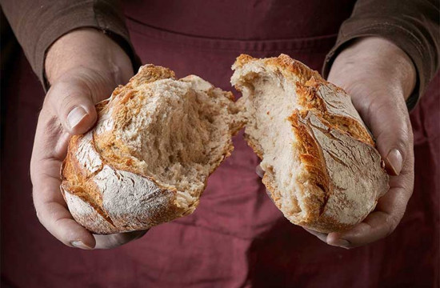

2º Trimestre de 2025
Título: E o Verbo se fez carne — Jesus sob o olhar do Apóstolo do amor
Comentarista: Elienai Cabral
Lição 4: Jesus — o Pão da Vida
Data: 27 de abril de 2025

TEXTO ÁUREO
“Eu sou o pão da vida.” (Jo 6.48).
VERDADE PRÁTICA
Jesus é o Pão da Vida que sacia a fome espiritual de todo ser humano.
LEITURA BÍBLICA EM CLASSE
João 6.1-14.
1 — Depois disso, partiu Jesus para o outro lado do mar da Galileia, que é o de Tiberíades.
2 — E grande multidão o seguia, porque via os sinais que operava sobre os enfermos.
3 — E Jesus subiu ao monte e assentou-se ali com os seus discípulos.
4 — E a Páscoa, a festa dos judeus, estava próxima.
5 — Então, Jesus, levantando os olhos e vendo que uma grande multidão vinha ter com ele, disse a Filipe: Onde compraremos pão, para estes comerem?
6 — Mas dizia isso para o experimentar; porque ele bem sabia o que havia de fazer.
7 — Filipe respondeu-lhe: Duzentos dinheiros de pão não lhe bastarão, para que cada um deles tome um pouco.
8 — E um dos seus discípulos, André, irmão de Simão Pedro, disse-lhe:
9 — Está aqui um rapaz que tem cinco pães de cevada e dois peixinhos; mas que é isso para tantos?
10 — E disse Jesus: Mandai assentar os homens. E havia muita relva naquele lugar. Assentaram-se, pois, os homens em número de quase cinco mil.
11 — E Jesus, tomou os pães e, havendo dado graças, repartiu-os pelos discípulos, pelos que estavam assentados; e igualmente também os peixes, quanto eles queriam.
12 — E quando estavam saciados, disse aos seus discípulos: Recolhei os pedaços que sobejaram, para que nada se perca.
13 — Recolheram-nos, pois, e encheram doze cestos de pedaços dos cinco pães de cevada, que sobejaram aos que haviam comido.
14 — Vendo, pois, aqueles homens o milagre que Jesus tinha feito, diziam: Este é verdadeiramente o profeta que devia vir ao mundo.
INTRODUÇÃO
O Senhor multiplicou pães e peixes para saciar a fome de uma grande multidão. No entanto, Ele notou que as pessoas estavam focadas apenas nas suas necessidades materiais, preocupando-se unicamente em satisfazer a sua fome imediata. A lição desta semana visa demonstrar que somos dependentes de Deus. Essa dependência não se limita às necessidades materiais, mas, acima de tudo, refere-se à nossa necessidade espiritual, que só o “Pão da Vida” pode satisfazer plenamente.
Palavra-Chave:
VIDA
I. JESUS, A MULTIDÃO, E O MILAGRE DA MULTIPLICAÇÃO
1. A multiplicação de pães e peixes. O Evangelho de João relata um dos mais impressionantes milagres de Jesus, quando Ele conseguiu alimentar quase cinco mil homens com “cinco pães e dois peixinhos” (v.9).
A narrativa do milagre dos pães e peixes está presente nos quatro Evangelhos (Mt 14.13-21; Mc 6.32-44; Lc 9.10-17). No capítulo 6, versículo 1, João começa com a expressão: “Depois disso”. Esta frase refere-se aos acontecimentos que se seguiram às palavras de Jesus dirigidas aos judeus em Jerusalém, durante a provável Festa da Páscoa mencionada no capítulo 5.
2. O milagre. Como o único milagre mencionado nos quatro Evangelhos, o evangelista procura mostrar a multiplicação de pães e peixes neste capítulo como uma manifestação do poder ilimitado de Jesus. Por esta razão, ele destaca a imagem de Jesus ao alimentar uma imensa multidão composta por homens, mulheres, jovens e crianças que o seguiam. Na sua narrativa, João revela o poder criador e divino que é capaz de trazer à existência aquilo que anteriormente não existia (Jo 6.11-13). Assim, o milagre da multiplicação de pães e peixes distingue-se dos milagres de cura e de outros tipos.
3. Qual era o interesse da multidão? Jesus percebeu que a multidão o seguia devido aos milagres e curas que realizava, mas não para escutar a sua mensagem. Em Jerusalém, os líderes religiosos judeus não apenas rejeitavam-no como o Messias, como também procuravam a sua morte. Ao deixar Jerusalém, o Senhor desejou afastar-se para estar a sós com os discípulos, mas a presença da multidão frustrou este desejo (Jo 6.2). Ele notou que as pessoas não estavam interessadas em ouvir a sua palavra como Filho de Deus. No dia seguinte, encontrou novamente a multidão que queria mais pão e confrontou-a ao mostrar que buscava apenas alimento material, ignorando o verdadeiro pão do céu para as suas almas (Jo 6.27). A situação não é muito diferente hoje em dia, quando muitos se apressam atrás de milagres, mas poucos demonstram interesse pela Palavra de Deus. De fato, nosso Senhor compreende as necessidades humanas, mas Ele sabe que não são os grandes milagres que resolverão os problemas das pessoas, pois é preciso algo mais profundo para alimentar as almas.
II. JESUS DESAFIA A FÉ DOS DISCÍPULOS
1. “E Jesus subiu ao monte”. Que monte seria este? Não existe uma designação específica para a localidade deste monte. Tal como em toda a região montanhosa, havia algumas elevações de terreno que, embora não fossem particularmente altas, podiam servir como um local adequado para Jesus se dirigir aos seus discípulos e à multidão. Assim, Ele subiu ao monte e sentou-se com os seus discípulos. A partir dali, nosso Senhor avistou uma multidão que se dirigia ao seu encontro. Por isso, decidiu testar um dos seus discípulos, Filipe, perguntando-lhe: “Onde compraremos pão para que estes comam?” (Jo 6.5,6). Todo o relacionamento de Jesus com os seus discípulos estava sempre fundamentado em um ensinamento.
2. O desafio para os discípulos. O Senhor utilizou a situação de uma multidão necessitada para transmitir aos seus discípulos uma valiosa lição. Nesse momento, os discípulos compreenderiam que muitos dos desafios da missão evangélica não podem ser superados apenas com o esforço humano. O discípulo Filipe foi colocado à prova por Jesus para enfrentar a dificuldade de alimentar essa multidão faminta (Jo 6.7-10). Aqui, o Senhor estava demonstrando a limitação humana em resolver problemas complexos. Naquele local, não havia comida suficiente nem possibilidade de compra para satisfazer as necessidades da multidão. O Senhor desafiava assim a fé dos discípulos, sempre com o intuito de promover o seu crescimento espiritual (Jo 6.6,14).
3. Uma lição de provisão. Os discípulos descobriram um menino que trazia consigo o lanche da tarde, contendo em seu alforje “cinco pães pequenos de cevada e dois peixinhos” (Jo 6.9). Jesus pegou esses pães e peixes, deu graças ao Pai e, por meio das suas mãos, realizou um milagre de multiplicação. A quantidade foi tão grande que precisaram buscar alguns cestos para distribuir os pães e os peixes à multidão e guardar o que restou. Assim, todos comeram até se saciar. A lição que tiramos deste episódio é que Deus nos surpreende com soluções extraordinárias. Ele manifesta o seu poder de provisão para aqueles que acreditam nEle.
III. JESUS — O PÃO QUE DESCEU DO CÉU
1. Qual é o real interesse da multidão? No dia seguinte ao milagre da multiplicação dos pães e peixes, a multidão que havia participado buscava Jesus na região de Cafarnaum, conforme indicado em João 6.22 e 6.24. Ao encontrá-la, Jesus transmitiu uma mensagem clara e “disse-lhes: Na verdade, na verdade vos digo que me buscais não pelos sinais que vistes, mas porque comestes do pão e vos saciastes” (Jo 6.26). O Senhor compreendia que a percepção daquela multidão sobre Ele era puramente social; desejavam um líder que satisfizesse as suas necessidades materiais. No entanto, para além do pão físico, nosso Senhor queria oferecer-lhes o pão que desceu do céu (Jo 6.32,33). O povo não percebia que a multiplicação dos pães era apenas uma representação do verdadeiro pão da vida que Jesus tinha para dar. Nosso Senhor é o pão que realmente apazigua a fome do ser humano (Jo 6.27).
2. O Pão do Céu. Não é preciso debater a respeito da identidade do “pão do céu”, pois trata-se do próprio Jesus. Nosso Senhor confirma a sua identidade divina quando diz: “Eu Sou”. Há, pelo menos, sete declarações somente no Evangelho de João que autenticam essa identidade divina: 1) “Eu sou o pão da vida” (6.35,48,51); 2) “Eu sou a luz do mundo” (8.12; 9.5); 3) “Eu sou a porta das ovelhas” (10.7,9); 4) “Eu sou o Bom Pastor” (10.11,14); 5) “Eu sou a ressurreição e a vida” (11.25); 6) “Eu sou o caminho, a verdade e a vida” (14.6); 7) “Eu sou a videira verdadeira” (15.1,5). Há uma comparação, no versículo 32, entre “o maná” na peregrinação de Israel, no deserto, sob a liderança de Moisés, com o “verdadeiro pão que desce do céu”, ou seja, o próprio Cristo, nosso Senhor, que afirma que quem se alimentar desse pão “viverá para sempre” (Jo 6.50,51).
3. O que é “comer o pão”? Observamos uma mudança nas palavras de Jesus ao passar de “o pão vivo que desceu do céu” para “o pão que eu der é a minha carne” (Jo 6.51). Mais tarde, o apóstolo Paulo fez uma associação simbólica entre o pão da Ceia do Senhor e a carne de Jesus, afirmando: “Isto é o meu corpo”; “isto é o meu sangue” (1Co 11.24,25). De forma evidente, ao mencionar a partilha da sua carne, o nosso Senhor refere-se à sua morte na cruz, onde oferece a sua vida em prol dos pecadores que se arrependem e creem no Evangelho, proporcionando-lhes salvação e vida eterna.
CONCLUSÃO
Nesta lição, compreendemos que Jesus é o Pão da Vida e se ofereceu por nós. Assim, aqueles que se alimentam de sua Palavra satisfazem a sua fome espiritual e recebem a vida eterna. O nosso Senhor é o pão que veio do céu, um alimento inextinguível que nos nutre para sempre. Por conseguinte, não devemos limitar-nos ao alimento material, que tem uma função fisiológica relevante, porém, passageira; aspiremos, portanto, ao alimento celestial que proporciona vida em abundância eternamente!
REVISANDO O CONTEÚDO
1. Em quais dos Evangelhos se encontra o relato do episódio da multiplicação?
A narrativa do milagre dos pães e peixes está presente nos quatro Evangelhos.
2. O que Jesus notou em relação à multidão?
Jesus percebeu que a multidão o seguia devido aos milagres e curas que realizava, mas não para escutar a sua mensagem.
3. Que ensinamento podemos extrair do episódio da multiplicação?
A lição que tiramos deste episódio é que Deus nos surpreende com soluções extraordinárias. Ele manifesta o seu poder de provisão para aqueles que acreditam nEle.
4. Qual foi a mensagem clara que Jesus transmitiu à multidão?
Ao encontrá-la, Jesus transmitiu uma mensagem clara e “disse-lhes: Na verdade, na verdade vos digo que me buscais não pelos sinais que vistes, mas porque comestes do pão e vos saciastes” (Jo 6.26).
5. Que alteração é visível nas palavras de Jesus em João 6.51?
Observamos uma mudança nas palavras de Jesus ao passar de “o pão vivo que desceu do céu” para “o pão que eu der é a minha carne” (Jo 6.51).